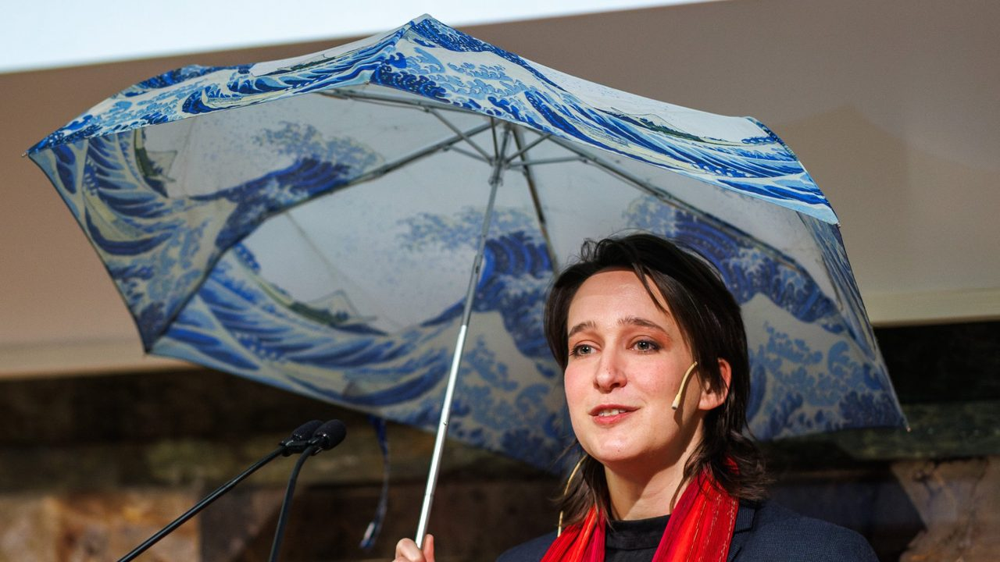

Images as primary evidence: archives of how communities organized knowledge, space, and meaning.
Beyond aesthetics, the conditions of making, distribution, and reception reveal the world that produced them.
What were viewers trained to notice?
How did visual conventions shape perception?
How can we recover evidence of that from the images themselves?
Close viewing and distant reading
Sustained structural attention to what a single image is doing, and computational or participatory analysis across large corpora.
Why now?
AI increasingly mediates how we encounter images, but fails on culturally embedded material. Those failures reveal where cultural knowledge operates beyond automation.
Digital track record
2025–2026AI_dPrincipal Investigator. Led the development of a chatbot that helps teachers write rules for AI use in their courses, integrated with the University of Zurich’s learning platforms. Completed and published in 2026. Available on Teaching Tools, the University of Zurich teaching platform.
Since 2024Drawing from the CrowdPrincipal Investigator. Leads the project, in which volunteers locate Japanese woodblock landscape prints (ukiyo-e) on a 3D map. They use Smapshot, a platform run by the Swiss Federal Institute of Technology in Lausanne (EPFL) and the School of Engineering and Management Vaud (HEIG-VD). Open dataset of 3,102 located prints and book pages.
Since 2023Kurrus Collection, Linden-Museum StuttgartGuest curator. Research on the collection (about one hundred illustrated books and nine hundred prints) and planning of a digital exhibition module.
2023–2024PortaCultura GRCultural Promotion Officer. Co-developed the cantonal cultural-heritage platform: data and content curation, interface conceptualization, workshops.
2020–2022Bilder der Schweiz OnlineProject coordinator at the Swiss Art Research Infrastructure (SARI), University of Zurich. Created the workflow for citizen scientists to locate about 28,000 Swiss prints, drawings, and photographs (1700–1950) on a map, using the Smapshot platform. The project also connected Swiss cultural data so that it can be searched and linked on the web.
2016–2019Late Hokusai: Thought, Technique, Society, The British MuseumTechnical research assistant. Conceptualized and developed the project’s research and publication platform, a bilingual database that links information on Hokusai’s works. Built in the research software ResearchSpace, now maintained by Kartography. Coached the team in its use.
2015–2016Digitization projectsMuseum intern: digitized research data on the William Gowland collection at the British Museum. Photography assistant: photographed Japanese illustrated books in Brussels and Maidstone for the digitization project of the Art Research Center, Ritsumeikan University, Kyoto.
Partners and collaborators
Smapshot (EPFL and HEIG-VD)Swiss platform for locating historical images on a map. Used for Drawing from the Crowd and Bilder der Schweiz Online
Art Research Center (ARC), Ritsumeikan University, KyotoPartner in Drawing from the Crowd. Digitization project, 2016.
The British MuseumLate Hokusai project, 2016–2019. Japanese Section, 2015–2016.
Swiss Art Research Infrastructure (SARI), University of ZurichBilder der Schweiz Online, 2020–2022
Linden-Museum StuttgartKurrus Collection, since 2023
The Nippon Foundation Scholars AssociationPrototype funding for Drawing from the Crowd, 2024–2025
Kansai UniversityJoint workshop in East Asian art history with the University of Zurich, 2024
National Institutes for the Humanities (NIHU), JapanRoundtable on digital humanities teaching in Switzerland and Japan, 2026

Speaking at the University of Zurich.
Projects
Role: Principal Investigator, since 2024
Drawing from the Crowd
A citizen science project on how Japanese woodblock prints (ukiyo-e) picture real places. Volunteers locate landscape prints on a 3D map. AI models that read images and text help analyze how the prints represent space.
Dataset
3,102 prints and book pages located on the map
Public launch
Late 2025
Platform
Smapshot, run by the Swiss Federal Institute of Technology in Lausanne (EPFL) and the School of Engineering and Management Vaud (HEIG-VD)
Partner
Art Research Center (ARC), Ritsumeikan University, Kyoto
Registered on
SciStarter (international), CoLabField (Japan)
Prototype
The Nippon Foundation Scholars Association, 2024–2025
Implementation
Career Grant of the Graduate Research Center, University of Zurich, 2025–2026
Role: Principal Investigator, 2025–2026. Completed.
AI_d: AI Didactic Companion
A chatbot that helps university teachers write rules for AI use in their courses. The rules state which tasks students may do with AI and which they must do on their own, matched to what the course should teach. Developed for East Asian art history.
Basis
Established models of learning and teaching (Bloom’s Taxonomy, the SAMR model, cognitive apprenticeship)
Use
Integrated with the University of Zurich’s learning platforms. Available on Teaching Tools, the university’s teaching platform.
Funding
micro_innovation grant of the University of Zurich teaching fund (ULF), 2025
Presented
National Museum of Japanese History (Rekihaku), January 2026
Create processes, not products.Research that produces methods others can use. Developed and documented with researchers, resource specialists, and the public, so that other projects can use them too.